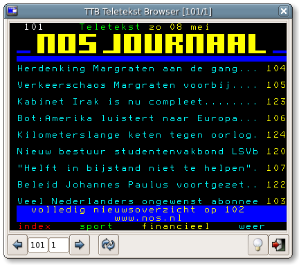

ttb teletekst browser
ttb is een programma om Teletekstpagina's te bekijken via internet; www.omroep.nl biedt al iets dergelijks aan, maar de programma's zijn alleen bruikbaar voor Windows en MacOS. ttb is geschreven voor Unix/Linux, maar zou het ook op andere platforms moeten doen.
ttb is geschreven door Dirk-Jan Binnema (djcb), met hulp van anderen. mail mij, of lees mijn blog, of mijn advogato-blog.
Ik sta open voor suggesties en bugrapports; vermeld graag zo veel
mogelijke relevante details zoals versies van Python, PyGTK,
distributie enzovoort.
ttb is beschikbaar volgens de voorwaarden van de GPLv2 of hoger.
nieuws
- [27/11/2005]: Versie 0.9.4 is nu beschikbaar; wederom geen grote wijzigingen, maar de installieprocedure is verder verbeterd; dat wil zeggen dat er een duidelijker foutmelding volgt in het geval er iets niet goed geïnstalleerd is. In de meeste gevallen waar het fout gaat, blijkt de oorzaak het ontbreken van python-dev te zijn In heel veel gevallen werkt alles feilloos, na installatie daarvan. Op verschillende distributies heeft het pakket een verschillende naam, bijvoorbeeld:
- python2.x-setuptools (2.x = 2.3/2.4/...) [Debian, Ubuntu,...]
- python-dev [Debian/Etch]
- python-devel [Novell/Suse]
- python2-devel [RedHat]
- libpython2.4-devel [Mandriva] (version may be different)
TIP: zie het kopje Bediening (scroll naar beneden) voor wat handige trucs.
- [01/10/2005]: Versie 0.9.3 is nu beschikbaar. Er zijn geen grote veranderingen, maar mensen die voorheen problemen hadden bij het installeren, kunnen het nu nogmaals proberen. Mochten er nu nog problemen zijn, laat het me a.u.b. weten.
- [08/05/2005]: Versie 0.9.2 is nu beschikbaar. Er zijn enkele kleine verbeteringen in de toetsenbordafhandeling, en ik heb de veelgevraagde 'Refresh'-knop toegevoegd. Belangrijkste verandering is echter dat ik een tarball gemaakt heb, met installatiescript etc. Zie onderaan deze pagina voor installatie-instructies. Voordeel hiervan is het ttb-pictogram nu automatisch geinstalleerd wordt, en ttb in het applicatiemenu terechtkomt. Het is getest, maar niet op elk mogelijk systeem; bugreports zijn dan ook welkom, met vermelding van wat er precies fout gaat, wat voor systeem (distributie, KDE of GNOME etc.) gebruikt wordt. "Hij doet het niet" is niet zo nuttig :-)
Meldingen dat het *wel* goed werkt zijn natuurlijk ook welkom!
- [17/04/2005]: Op dit moment wordt gewerkt aan versie 1.0;
nieuwe features zullen (nauwelijks) meer worden toegevoegd; nadruk ligt
nu op het verhelpen van kleine bugs, het stroomlijnen van de packaging enzovoort. Maar bugreports zijn erg welkom, zodat we een bugvrije(tm) versie 1.0 op de wereld kunnen loslaten.
- [03/04/2005]: versie 0.9.1 is nu beschikbaar. De Teletekst pagina's
op internet waren aangepast na het 25 jarig jubileum (gefeliciteerd!),
maar de wijzigingen zorgden ervoor dat 'slim bladeren' niet meer werkte
(i.e. het programma begrijpt dat het voor de 'volgende pagina' van
pagina 114 naar pagina 120 moet springen). Dat heb ik verholpen.
En 'zooming' kan nu ook naar 70% van de normale grootte, voor mensen met erg goede ogen.
 Verder bugfixes (refresh en foutafhandeling) van Job Ganzevoort en Jochem Rutgers. Daarnaast ondersteunt ttb nu de teletekst-foutpagina. En, belangrijk, er is nu een ttb pictogram
(links). Vanaf versie 0.9 komen er alleen nog bugfixes en packaging
bij, zodat we hopelijk snel met versie 1.0 kunnen komen, incl. RPM en
DEB pakketten.
Verder bugfixes (refresh en foutafhandeling) van Job Ganzevoort en Jochem Rutgers. Daarnaast ondersteunt ttb nu de teletekst-foutpagina. En, belangrijk, er is nu een ttb pictogram
(links). Vanaf versie 0.9 komen er alleen nog bugfixes en packaging
bij, zodat we hopelijk snel met versie 1.0 kunnen komen, incl. RPM en
DEB pakketten.
- [27/03/2005]: versie 0.9 is nu beschikbaar. Behalve de sporadische bugfix is de belangrijkste nieuwe feature: zooming.
Dat wil zeggen, met behulp van de '+' en '-' toetsen kan het
ttb-venster vergroot worden, zodat de teletekst leesbaar is, ook op een
1600x1200 scherm, of nog hogere resoluties. Gebaseerd op werk van Job - bedankt!
De
features voor versie 1.0 zijn er nu wel zo'n beetje, nadruk zal nu
liggen op wat polijsten (documentatie en packaging). Maar suggesties
blijven welkom natuurlijk, evenals bugreports.
- [13/03/2005]: versie 0.8 is uit. Niet zoveel tijd voor ttb deze week, daarom alleen wat bugfixes en paginanummer wordt getoond in titelbalk. Jobs patch voor zooming is hopelijk volgende week geïntegreerd.
Tip: Een wat onderbelichte feature is drag&drop; dat wil zeggen dat je een pagina simpel van ttb naar het bureaublad of een ander programma kunt slepen.
- [06/03/2005]: versie 0.7! Dankzij wederom de ideeën en patches van Job Ganzevoort zijn er allerlei nieuwe features beschikbaar:
- history-mechanisme - blader met Alt-PgUp en Alt-PgDown door eerder gekozen pagina's;
- caching
- ttb houdt nu een cache bij, wat het bladeren door reeds eerder
geraadpleegde pagina's veel sneller maakt. Pagina's in de cache hebben
een levensduur van 5 minuten, en met 'R' (refresh) kan een nieuwe versie geforceerd worden;
- slim door de pagina's bladeren - als de huidige pagina bijv. 130 is, dan 'weet' ttb dat de volgende pagina bijv. 140 is.
Verder nog de nodige kleine bugfixes, kleine gebruiksverbeteringen.
- [28/02/2005]: versie 0.6 is nu beschikbaar; allerlei kleine verbeteringen in de user-interface. Speciale dank gaat uit naar Job Ganzevoort voor zijn testwerk en patches, en naar alle andere testers.
- [24/02/2005]: vandaag ontdekte ik ook dat de officiële teletekst website naar deze site linkt.
- [24/02/2005]: het blijkt dat ttb niet goed met sommige oudere versies van Python; mocht dat het geval zijn,
dan werkt wellicht ttb versie 0.4 wèl. Zie onder het kopje 'download/installatie'.
Ondertussen werk ik aan een ttb die voor alle recente Python-versie werkt.
- [23/02/2005]: versie 0.5 is uit; deze verhelpt enkele kleine bugs, zoals het buiten beeld vallen van letters bij bepaalde themes,
en de 'busy-wait' cursor. Verder, ttb werkt nu (hopelijk) ook met Python 2.2; (mkdtemp bestaat pas sinds 2.3). De sneltoetsen zijn een beetje aangepast.
- [07/11/2004]: versie 0.4 is uit; proxy's worden nu ondersteund ('http_proxy'), toetsenbordondersteuning, geen pygtk 2.4 meer vereist, UI gestroomlijnd.
- [30/10/2004]: versie 0.3 is uit; pagina's zijn nu 'klikbaar'
- [25/10/2004]: versie 0.2; drag & drop naar de desktop
bediening
De bediening van TTB wijst grotendeels vanzelf, maar:
| Actie | Muis | Toetsenbord |
| Naar vorige pagina | Linkermuisklik op pijl naar links | PageUp |
| Naar volgende pagina | Linkermuisklik op pijl naar rechts | PageDown |
| Naar vorige subpagina | Rechtermuisklik op pijl naar links | Shift-PageUp |
| Naar volgende subpagina | Rechtermuisklik op pijl naar rechts | Shift-PageDown |
| Naar vorige pagina in de historie | | Alt-PageUp |
| Naar volgende pagina in de historie | | Alt-PageDown |
| Zoom-in | | + |
| Zoom-out | | - |
vereisten
TTB (teletekst-browser) is geschreven in Python 2.2+, en maakt gebruikt van de PyGtk (bij SUSE is pygtk een deel van het gnome-python pakket).
Daarnaast is het Python-Dev pakket vereist (voor de installatie); dat pakket wordt verschillend benoemd bij diverse distributies:
- python2.x-setuptools (2.x = 2.3/2.4/...) [Debian, Ubuntu,...]
- python-dev [Debian/Etch]
- python-devel [Novell/Suse]
- python2-devel [RedHat]
- libpython2.4-devel [Mandriva] (version may be different)
download/installatie
ttb is beschikbaar onder de voorwaarden van de GNU General Public License.
De oude versie is nog beschikbaar, mocht de nieuwe niet goed functioneren.
Instructies
Oude instructies (versie 0.9.1 en ouder)
Het bestaat uit slechts een enkel bestand.
- Download het hier (rechtsklik, 'Save link as ...')
- Zet de permissies goed: chmod +x ttb
- Zet het in een directory in je pad, bijv. /usr/local/bin of ~/bin
- Start nu het command ttb
Last modified: Sun Nov 27 21:49:36 EET 2005